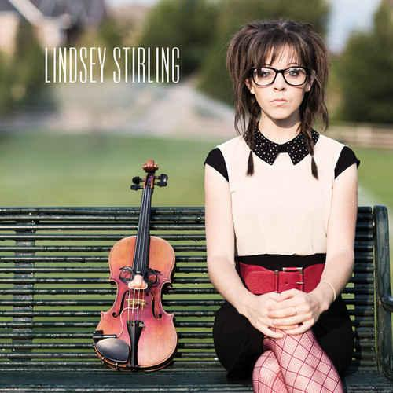

2010 — Lindsey Stomp (миниальбом)
«Transcendence»
«Song of the Caged Bird»
«Spontaneous Me»
Синглы:
2011 — «Electric Daisy Violin»
2011 — «Shadows» (feat. Ultra Wave (Arthur Tiguan))
2011 — «Zelda Medley»
2011 — «Silent Night» (feat. Ultra Wave (Arthur Tiguan))
2011 — «River Flow in You»
2011 — «Stars Align»
2011 — «Celtic Carol» (feat. Ultra Wave (Arthur Tiguan))
2012 — «The Lord of The Rings Medley»
2012 — «Crystallize» (Dubstep Violin)
2012 — «Skyrim» (feat. Peter Hollens)
2012 — «Zi-Zi’s Journey»
2012 — «We Found Love» (VenTribe)
2012 — «Starships» (feat. Megan Nicole)
2012 — «Grenade» (Bruno Mars, Lindsey Stirling, Alex Boye' & the Salt Lake Pops)
2012 — «On the Floor»
2012 — «Phantom of the Opera»
2012 — «Come With Us» (Lindsey Stirling & Can’t Stop Won’t Stop)
2012 — «Game of Thrones» (feat. Peter Hollens)
2012 — «Elements» (Dubstep Violin)
2012 — «Anti Gravity»
2012 — «Moon Trance» (feat. Ultra Wave (Arthur Tiguan))
2012 — «Assassin`s Creed III»/li>
2012 — «Song of the Caged Bird»
2012 — «Just Dance 4»
2012 — «What Child is This»
2013 — «Thrift Shop» (feat. Tyler Ward & Samuel Ameglio)
2013 — «Mission Impossible» (feat. The Piano Guys)
|
 |